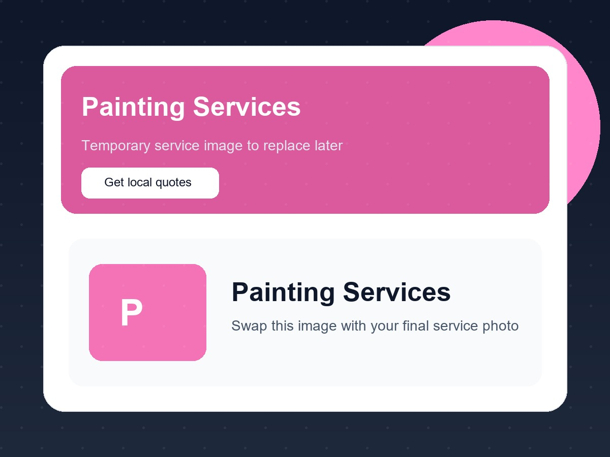
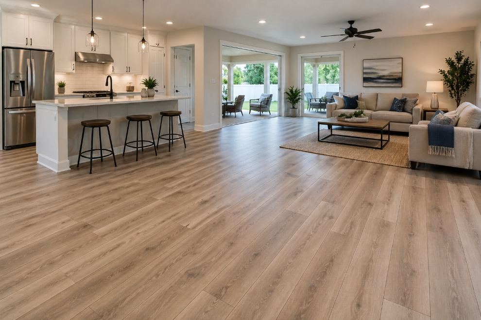
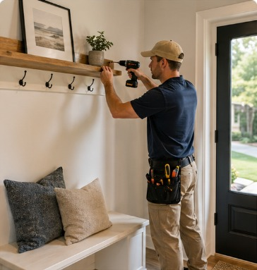
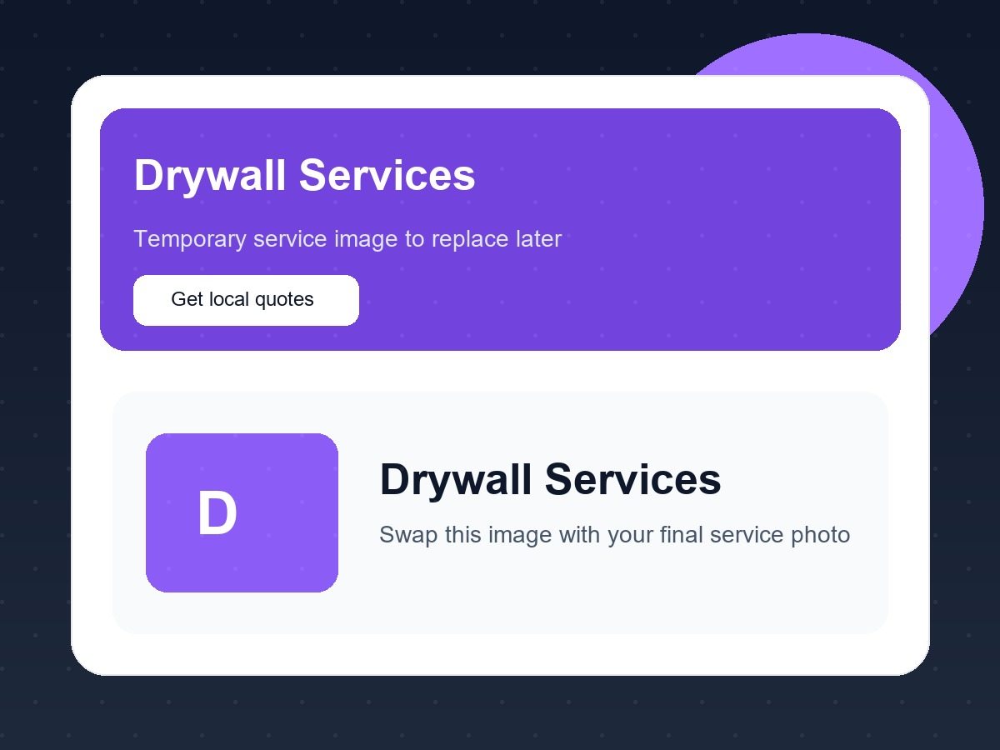

LOCAL SERVICE MARKETPLACE
Find local service professionals near you.
Tell us what you need once. GetEstimateFast helps connect you with independent local professionals who serve your area.
Free to submit · No obligation to hire · Availability varies by service and location
POPULAR SERVICES
What do you need help with?
Explore some of our most-requested service categories and start with the one that best matches your project.
House Cleaning
Regular, deep, move-in or move-out cleaning.
Start request →
Painting
Interior and exterior painting and touch-ups.
Start request →
Flooring
LVP, laminate, wood, tile and related flooring work.
Start request →
Handyman
Basic repairs, installations and general home help.
Start request →
Drywall
Patches, repairs, finishing and replacement.
Start request →Pressure Washing
Driveways, patios, sidewalks and exterior surfaces.
Start request →HOW IT WORKS
How GetEstimateFast works
A simple way to organize your project and connect with local service professionals.
Tell us what you need
Share your service, project details, location and timing.
We organize your request
Your information gives relevant professionals context before they respond.
Connect with local professionals
Eligible professionals serving your area may contact you about the project.
FOR HOMEOWNERS
Why homeowners use GetEstimateFast
Less searching, better project context, and more control over what happens next.
Save time
Describe your project once instead of contacting multiple companies individually.
Better project context
Helpful details give professionals a clearer understanding before they contact you.
You stay in control
Compare options and decide whether to hire. There is no obligation.
GROWING LOCAL COVERAGE
Local coverage that grows with our network
GetEstimateFast is expanding service coverage as local professionals join the platform. Availability varies by service and location.
FOR SERVICE PROFESSIONALS
Grow your local service business with GetEstimateFast
Build your professional presence, organize the services you offer and set the areas you want to serve.
Professional account availability and marketplace features are being rolled out in stages. Opportunities are never guaranteed.
Prepare your business details, services and experience.
Choose the ZIP Codes and travel radius that fit your business.
Marketplace access opens only when the applicable Production features are approved.
KNOW WHAT TO EXPECT
A transparent and trustworthy experience
GetEstimateFast is a marketplace platform that connects customers with independent service professionals.
Independent professionals
Service providers are independent businesses, not GetEstimateFast employees.
Responses are not guaranteed
Availability and replies depend on your service, location and participating professionals.
You choose who to hire
Compare your options and decide what works for you.
We do not perform the service
GetEstimateFast provides the platform and does not perform or supervise the requested work.
FAQ
Common questions
Clear answers about requests, professionals and availability.
Is GetEstimateFast free for customers?
Yes. Customers can submit a service request without paying GetEstimateFast to create the request.
Does submitting a request guarantee an estimate?
No. Availability and responses depend on the service, location and participating professionals.
Who can see my contact information?
Contact information may be shared with eligible independent professionals who receive access to the request under platform rules.
Can I choose which professional to hire?
Yes. You decide whether to respond, compare options and hire a professional.
What areas does GetEstimateFast serve?
Availability varies by service and location. GetEstimateFast expands coverage as local professionals join the platform.
Does GetEstimateFast perform the work?
No. GetEstimateFast is a marketplace platform and does not perform the services requested through the platform.
GET STARTED
Ready to get your project moving?
Tell us what you need and start your request in just a few steps.